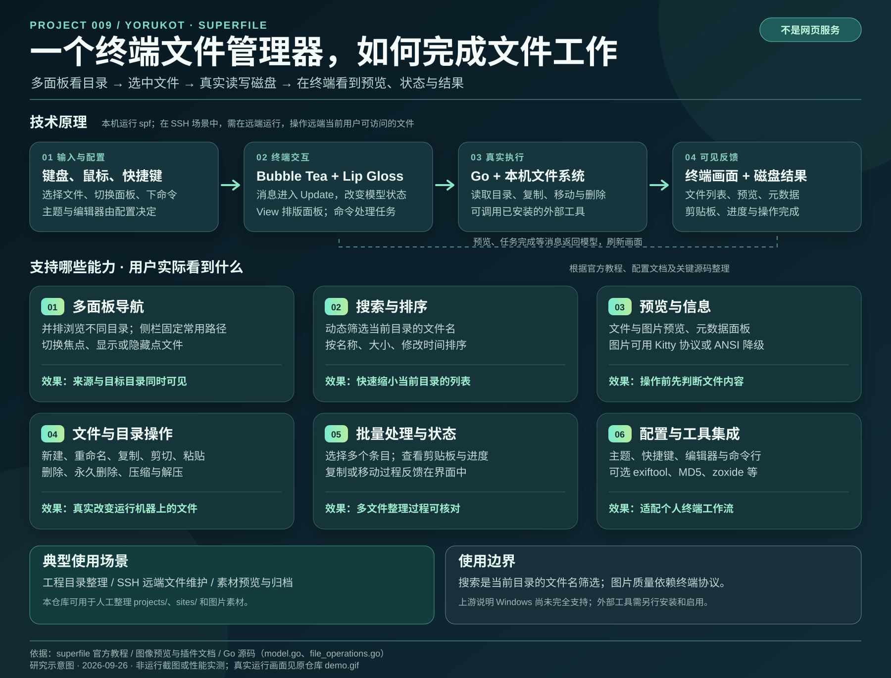

多面板浏览
并排打开目录，在路径之间切换，把常用位置固定在侧栏。
效果：减少来回切目录下方是原项目提供的实际操作录屏，能看到启动、双面板浏览和文件操作反馈；它不是本研究在这台电脑上的运行记录。
下方的可点击终端面板是本研究制作的网页模拟，用来解释操作结果；它不会连接到真实 superfile 或文件系统。
这些是上游文档描述的能力；下方交互区展示操作方式与可见反馈。
并排打开目录，在路径之间切换，把常用位置固定在侧栏。
效果：减少来回切目录动态筛选当前目录文件名，查看内容、元数据和图片预览。
效果：选中前先确认内容选择多个条目，复制、剪切、粘贴或删除，查看进度与剪贴板。
效果：复杂整理可见、可控更换主题、快捷键、编辑器，并开启元数据或 zoxide 等集成。
效果：适配终端工作流先选中文件并点“复制”，再点另一个面板和“粘贴”。列表、预览、进度和剪贴板会随操作更新。
File panel 1
~/research/projects
File panel 2
~/research/assets
终端输入驱动界面状态；真实的 superfile 再通过 Go 调用本地文件系统。
输入操作、切换焦点、搜索、选取文件和调整面板。
模型接收消息并更新状态；Lip Gloss 组合终端画面。
真实程序执行读目录、重命名、复制、移动等磁盘操作。
预览、元数据和任务状态返回界面，让操作有反馈。

以下场景由已核对功能推导，不代表本次运行测试。
一侧看研究项目，另一侧看素材目录；复制文件、核对名称，再用编辑器处理内容。
在服务器或 SSH 会话中浏览和管理文件，减少反复输入长路径。
查看图片和元数据、选择多项后批量处理；图像质量受终端支持影响。
它能帮助人工整理 projects/、sites/ 和图片素材，也提供一个研究终端交互架构的案例。来源、许可证、研究结论仍需逐项人工核对。
页面结合上游真实演示与公开资料制作。可点击的模拟界面不证明软件在本机的运行效果。
上游 README 仍注明 Windows 尚未完全支持。高质量图片预览依赖终端协议；真实复制、删除等操作会修改磁盘，正式使用前应核对路径与选择项。本研究尚未实机验证。